[旅遊] 去紐西蘭旅遊前要看的筆記
Contents
透過這篇筆記，你將了解前往紐西蘭旅遊所需的準備、注意事項、景點推薦，甚至一些在當地的特殊經驗，讓你的旅行更加順利與豐富。
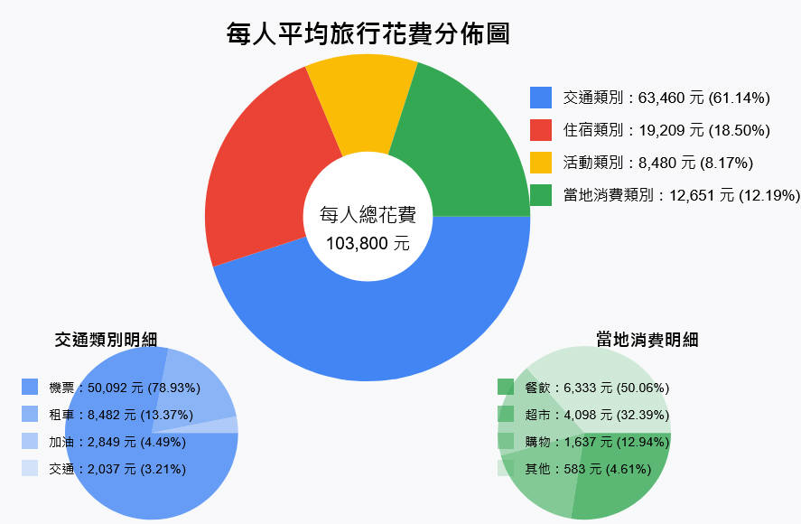行前準備：確保旅途順暢
- 出發前必辦事項：
-
入境聲明：所有入境旅客需提前完成「紐西蘭旅行者聲明」（NZTD），透過APP辦理。
-
電子旅行授權：持免簽證資格旅客，需申請「電子旅行授權」（NZeTA），透過APP辦理。
-
3D驗證：Deer Park Heights Queenstown需3D驗證，若收不到簡訊，建議辦理電子郵件驗證再出發。
-
加油PIN碼：加油需刷卡PIN碼（通常為預借現金密碼），請事先辦理。
-
現金準備：僅需少量現金，大眾運輸、路邊停車、商店多可刷卡（VISA、Master）或感應支付。
-
刷卡手續費：連鎖店外，多數店家刷卡有1-3%手續費（規則不明），洗衣、烘衣機（4-6紐元/次）需現金，可多備2元硬幣。
- 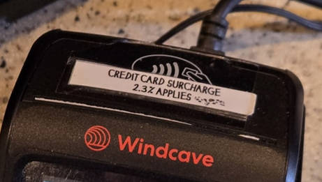
- 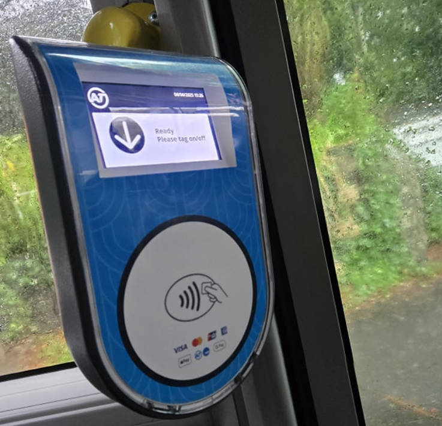
-
食物申報：所有食物皆於當地採買，避免申報。
-
- 個人物品清單：
- 駕照正本與國際駕照正本
- 220V吹風機
- 拖鞋
- 沐浴乳、牙刷、牙膏
- 車用手機架、太陽眼鏡
- 保溫杯、茶包
- 耳塞（木造房隔音差）
- 腳架（星空攝影）
- SIM卡要可以用ChatGPT
- 租車注意事項：
- 機場接送：要當地電話?
- 路況：路程顛簸多碎石，建議租全險車輛。
- 交通規則：右駕、熟悉圓環讓路、狹橋、Give Way、工地隱藏隊伍等規則。
- 駕駛安全：下坡高速小心打滑，注意避讓大型車輛。
- 其他準備：
- 航班選位：boeing-777 飛機選位建議。
- 極光預測：下載極光APP。
旅途中的發現與建議
推薦行程：
- 觀星導覽：蒂卡波湖，Dark Sky Project參加中文導覽觀星，選農曆月初減少光害。 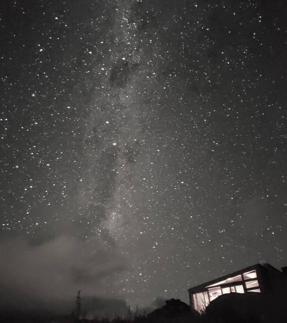 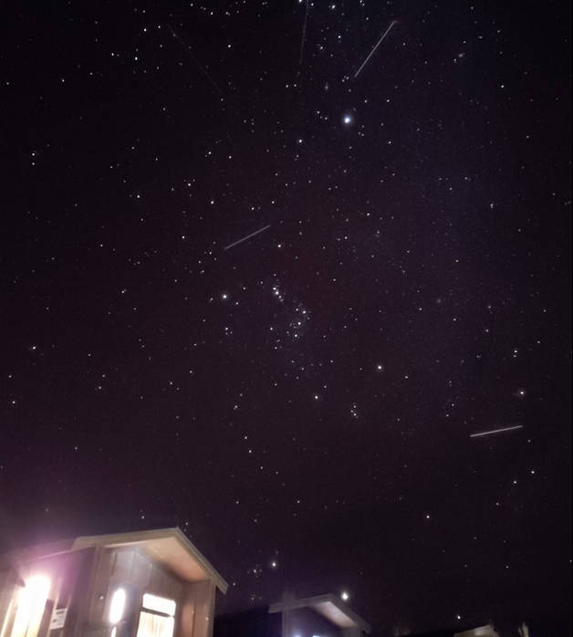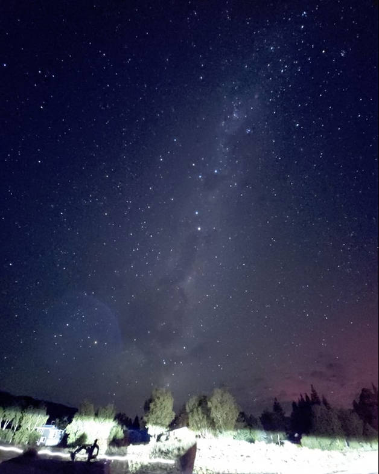
- 冰川健行：Fox Glacier，3小時冰川健行，價格高昂，建議年輕力壯時前往。 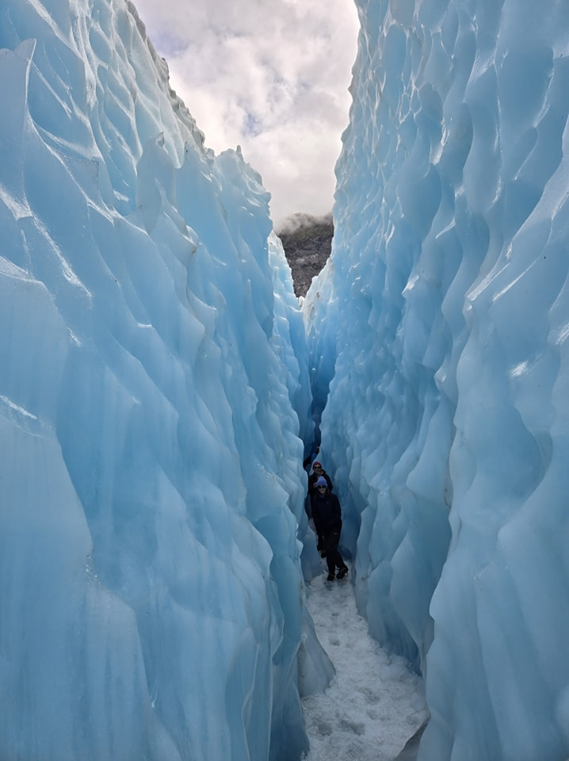
- 觀賞海獅：卡提奇燈塔Katiki Point Lighthouse附近。 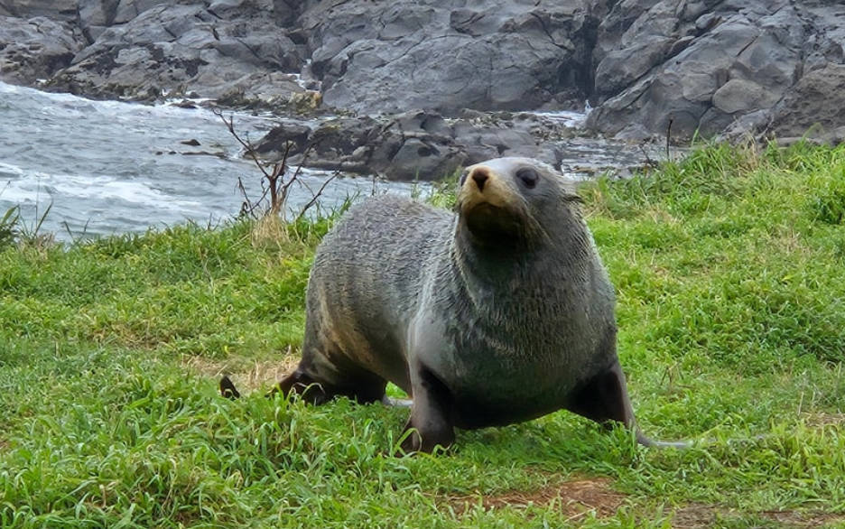
- 餵食動物：Alpine Alpacas Fairlie。

美食推薦：
-
The White Lady(奧克蘭)
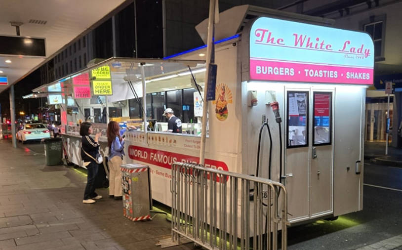 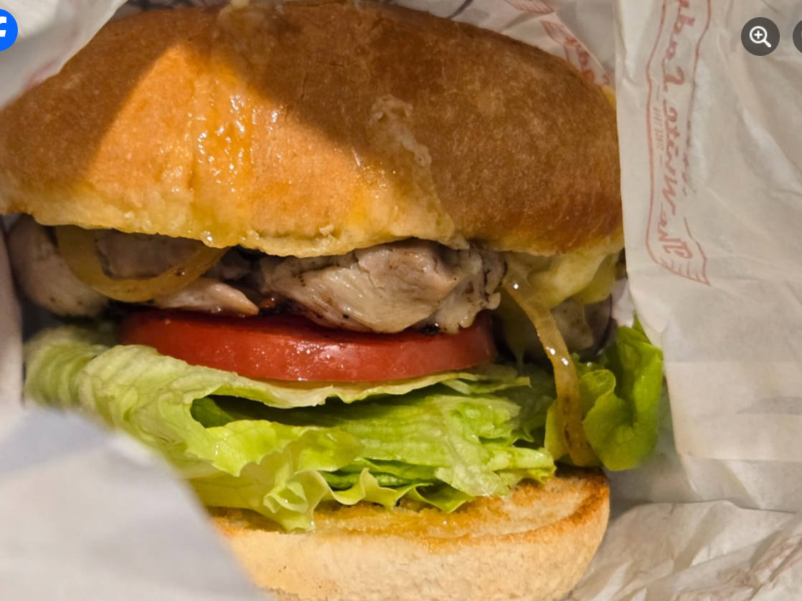
-
Cookie Time餅乾
-
自炊：住處多提供廚具，可自煮省錢。
自然景觀：
-
壯麗風光：大山大湖草原、羊牛馬鹿、星空（近極光）。
-
Otira Viaduct Lookout大鳥。
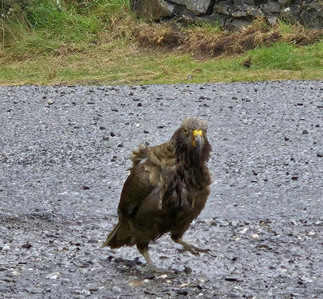 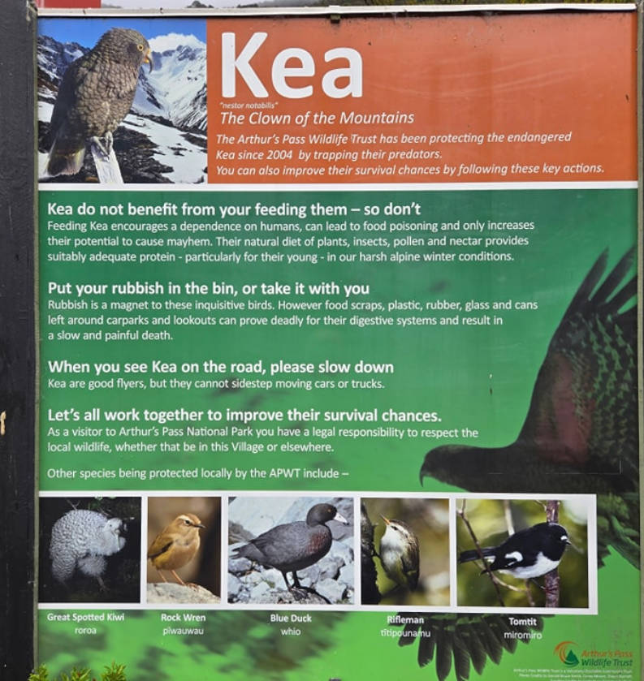
-
海獅生態。
住宿建議：
- 蒂阿瑙住宿：建議住一晚，或從皇后鎮出發。
交通觀察：
-
加油技巧：不能插到底，聽聲音判斷油滿，避免跳停後溢出。
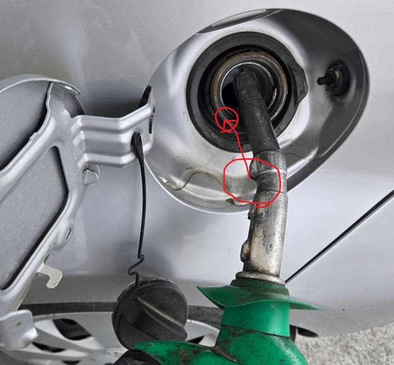 -
機場到市中心：Sky Drive可刷卡，國內線接機後至國際線，不塞車30分鐘，每人20 紐元。不急的話，下次考慮使用火車與公車，每人不到10紐，可能要一小時。
-
奧克蘭公車與火車：可以用google map找到路線，上下車都要感應信用卡，看起來不收現金。
-
路邊攔車：南島路邊攔車比讚三次。
-
基督城奧克蘭交通：車輛多，聽到喇叭聲。
-
路邊停車：沒有$的符號就是免費但限時。付費方式只能預付，可以刷卡，可能要把收據放車上。
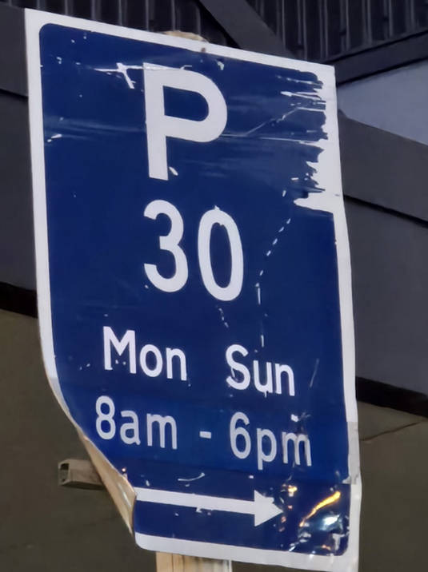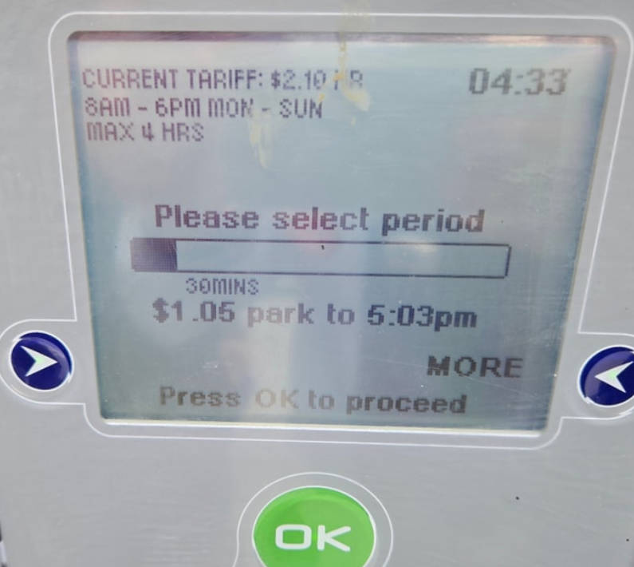 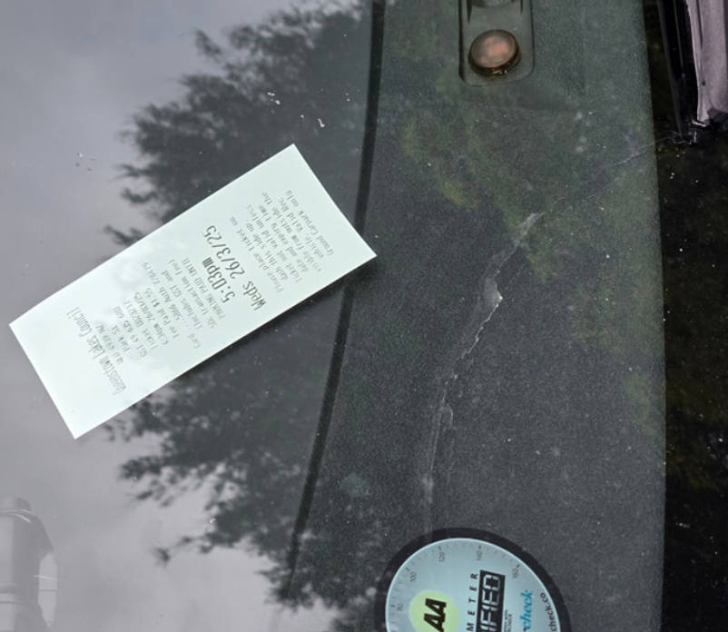
廁所類型：
-
單孔廁所
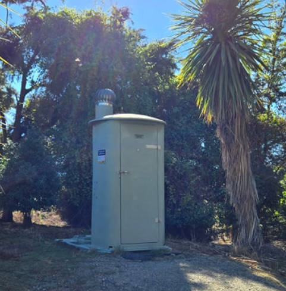 -
設施完善廁所（有水有電）
-
麥當勞廁所
購物指南：
- New World超市：要自己說是旅客，可以享用會員價。Tourist Club
麥當勞遊樂區：
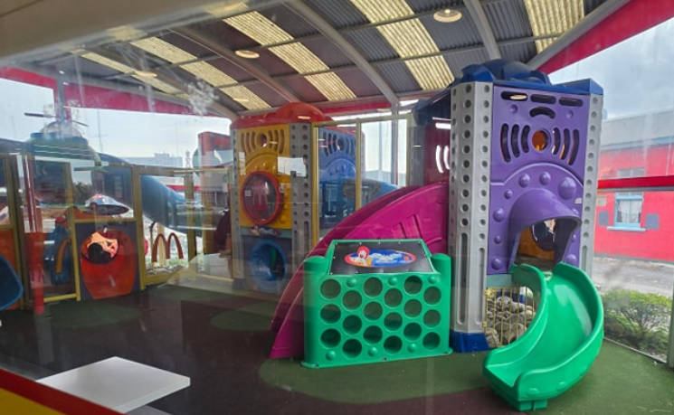人行道路面跟韓國一樣：
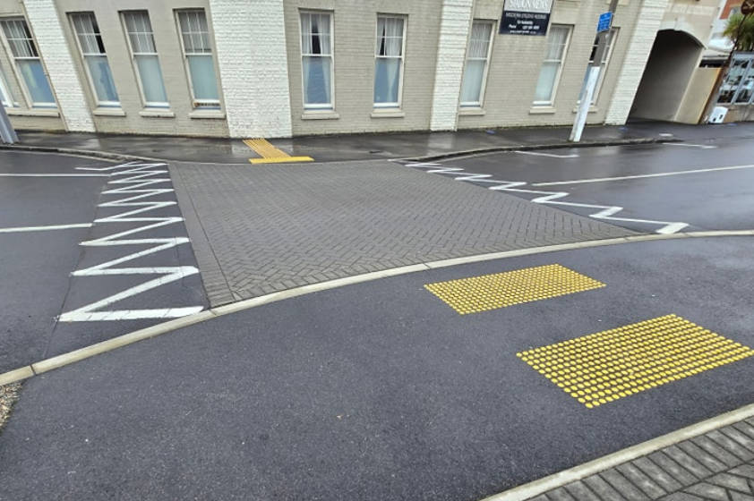其他：
- 雨天備案：基督城The Palms Shopping Centre有遮雨停車位。
- 咖啡加價：冰咖啡需額外加1紐元。
- 麥當勞活動：Minecraft活動及早餐時段是11點結束，早餐薯餅可換薯條。
當時氣象：
- 最後幾天遇到低氣壓(順時針的!)，下雨好久，還好已經看完星空與冰川。
鋪路：
米佛峽灣Milford Sound：